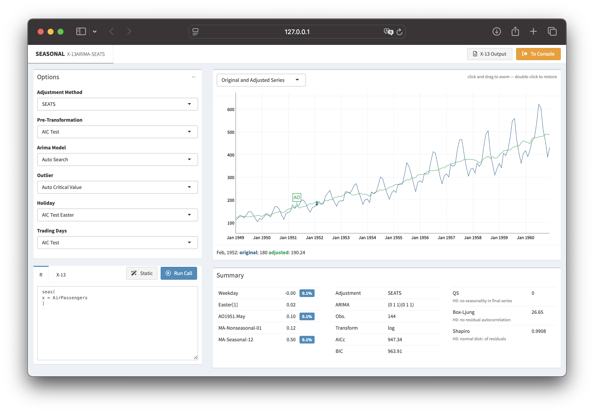
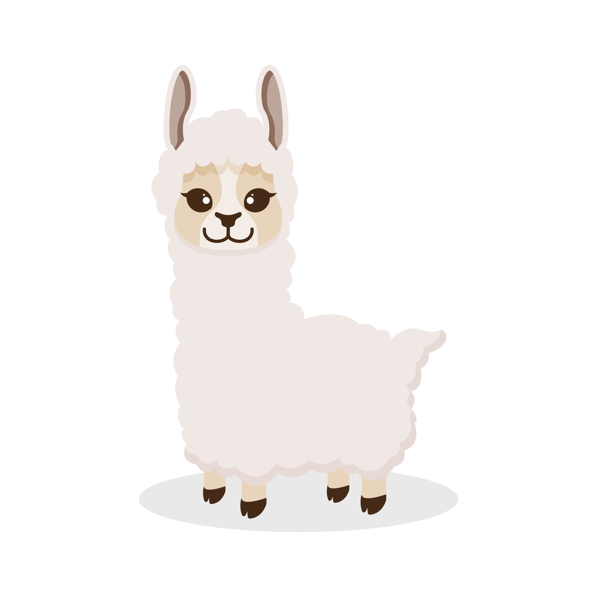
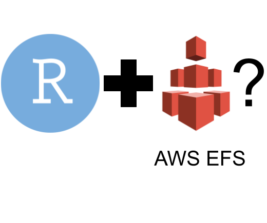
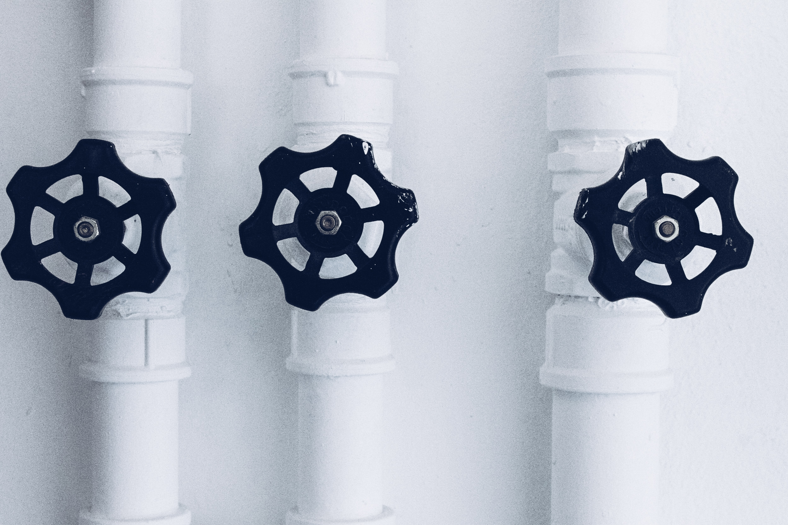
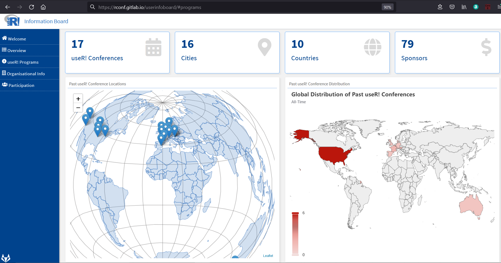
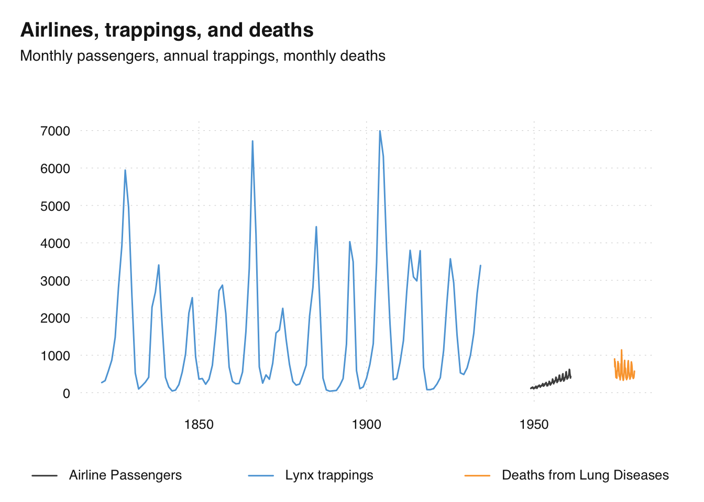

Consulting
R Consulting
Workshops
R Markdown templates
Solutions
Enterprise Data Science Environments
Container Images
Posit Licences
open source
about
blog
Categories
All
(27)
DevOps
(2)
Docker
(1)
Git
(1)
GitHub
(2)
LLM
(2)
Posit
(2)
R
(20)
api
(1)
certified partner
(1)
dashboard
(1)
databases
(3)
dm
(2)
file system
(1)
google
(1)
gsod
(1)
macOS
(1)
oauth2
(1)
performance
(1)
shiny
(1)
sport
(1)
test
(1)
time-series
(8)
Blog posts
Organizing tests in R packages
4 min
R
test
A small team at cynkra is working on the R package igraph, a popular package for simple graphs and network analysis. A big part of this work involves refactoring legacy code…
David Schoch
Mar 4, 2025
Playing with AI Agents in R
6 min
R
LLM
It’s local LLM time! 🥳 What an adventure it has been since I first started exploring local LLMs. With the introduction of various new Llama models, we now have impressive…
Christoph Sax
Feb 7, 2025

seasonal 1.10: R-interface to X-13ARIMA-SEATS
2 min
R
time-series
We are happy to announce that the latest CRAN version of
seasonal
fixes several bugs and makes it easier to read specialized output from X-13ARIMA-SEATS. See here for a…
Christoph Sax
Oct 21, 2024
Introducing blockr: a no-code dashboard builder for R
14 min
R
Since 2023, BristolMyersSquibb, the Y company and cynkra have teamed up to develop a novel
no-code
solution for R.
David Granjon
Sep 16, 2024
2024 road and para-cycling road world championships: preliminaRy analysis
19 min
sport
R
From Sept 21 to Sept 29, Zurich will welcome the 2024 road and para-cycling road world championships. To mark the occasion, my friends and I went to do the 2 first loops…
David Granjon
Sep 10, 2024

Playing with Llama 3.1 in R
3 min
LLM
Meta recently announced Llama 3.1, and there’s a lot of excitement. I finally had some time to experiment with locally run open-source models. The small 8B model, in…
Christoph Sax
Jul 27, 2024
shinyMobile 2.0.0: a preview
66 min
shiny
shinyMobile has been enabling the creation of exceptional R Shiny apps for both iOS and Android for nearly five years, thanks to the impressive open-source Framework7 template…
Veerle van Leemput and David Granjon
May 13, 2024

EFS vs. NFS for RStudio on Kubernetes (AWS): Configuration and considerations
18 min
DevOps
Posit
file system
performance
As a consulting company with a strong focus on R and Posit (formerly RStudio) products, we have gathered quite a bit of experience in configuration and deployment of…
Patrick Schratz
Sep 14, 2022

Accessing Google’s API via OAuth2
9 min
api
google
oauth2
At cynkra we recently aimed to automate more parts of our internal toolstack. One tool is Google Workspace. Google Workspace offers a comprehensive REST API which can be…
Patrick Schratz
May 14, 2022
seasonal 1.9: Accessing composite output
2 min
R
time-series
seasonal is an easy-to-use and full-featured R interface to X-13ARIMA-SEATS, the seasonal adjustment software developed by the United States Census Bureau. The latest CRAN…
Christoph Sax
Apr 19, 2022

Google Season of Docs with R: useR! Information Board
6 min
R
gsod
dashboard
“Google Season of Docs (GSoD) provides support for open source projects to improve their documentation and gives professional technical writers an opportunity to gain…
Ben Ubah
Jan 5, 2022
Running old versions of TeXlive with tinytex
5 min
R
Rendering PDFs with rmarkdown requires a working LaTeX installation, such as tinytex. Occasionally, existing workflows break with the newest version of LaTeX. This post…
Kirill Müller
Oct 7, 2021
tsbox 0.3.1: extended functionality
5 min
R
time-series
The tsbox package provides a set of tools that are agnostic towards existing time series classes. The tools also allow you to handle time series as plain data frames, thus…
Christoph Sax
Sep 18, 2021
Celebrating one-year anniversary as RStudio Full Service Certified Partner
8 min
certified partner
Posit
Docker
cynkra celebrates its first anniversary as an RStudio Full Service Certified Partner! Every day, we help our clients set up professional IT infrastructures using RStudio…
Cosima Meyer, Patrick Schratz
Jul 9, 2021
Deprecating a pkgdown site served via GitHub Pages
4 min
R
GitHub
Websites for R packages built with {pkgdown} have become a de-facto standard over the last few years. Many R packages build their site during Continuous Integration (CI)…
Patrick Schratz, Kirill Müller
Apr 9, 2021
gfortran support for R on macOS
5 min
R
macOS
For a long time,
gfortran
support on macOS could be achieved by installing the homebrew cask
gfortran
via
brew cask install gfortran
.
Patrick Schratz
Mar 16, 2021
Seasonal Adjustment of Multiple Series
3 min
R
time-series
seasonal is an easy-to-use and full-featured R-interface to X-13ARIMA-SEATS, the seasonal adjustment software developed by the United States Census Bureau. The latest CRAN…
Christoph Sax
Mar 9, 2021
Dynamic build matrix in GitHub Actions
8 min
R
GitHub
I wanted to try out the new
fromJSON()
that allows dynamic build matrices in GitHub Actions for quite some time now. Today was the day.
Kirill Müller
Dec 23, 2020
Setting up a load-balanced Jitsi Meet instance
4 min
DevOps
Jitsi Meet is a self-hosted Free and Open-Source Software (FOSS) video conferencing solution. During the recent COVID-19 pandemic, the project became quite popular, and many…
Patrick Schratz
Nov 2, 2020
Maintaining multiple identities with Git
2 min
Git
When committing to a Git repository related to my consulting work, I must use my company e-mail address, kirill@cynkra.com. Not so much for my open-source work – for this, I…
Kirill Müller
Aug 25, 2020
Relational data models in R
12 min
R
dm
databases
Relational databases are powerful tools for analyzing and manipulating data. However, many modeling workflows require a great deal of time and effort to wrangle data from…
Angel D’az, Kirill Müller
Apr 2, 2020
tempdisagg: converting quarterly time series to daily
4 min
R
time-series
Not having a time series at the desired frequency is a common problem for researchers and analysts. For example, instead of quarterly sales, they only have annual sales.…
Christoph Sax
Feb 9, 2020

tsbox 0.2: supporting additional time series classes
4 min
R
time-series
The tsbox package makes life with time series in R easier. It is built around a set of functions that convert time series of different classes to each other. They are…
Christoph Sax
Aug 12, 2019
Introducing dm: easy juggling of tables and relations
7 min
R
dm
databases
The dm package reduces your mental strain when working with many tables. It connects your data, while still keeping them in their original tables. You can easily perform…
Balthasar Sager
Jul 17, 2019
tsbox 0.1: class-agnostic time series
3 min
R
time-series
The R ecosystem knows a vast number of time series classes: ts, xts, zoo, tsibble, tibbletime or timeSeries. The plethora of standards causes confusion. As different…
Christoph Sax
Apr 10, 2019
Time series of the world, unite!
3 min
R
time-series
The R ecosystem knows a ridiculous number of time series classes. So, I decided to create a new universal standard that finally covers everyone’s use case…
Christoph Sax
May 15, 2018
Done “Establishing DBI”!?
15 min
R
databases
The “Establishing DBI” project, funded by the R consortium, started about a year ago. It includes the completion of two new backends,
RPostgres
and
RMariaDB
, and quite a few…
Kirill Müller
May 1, 2018
No matching items